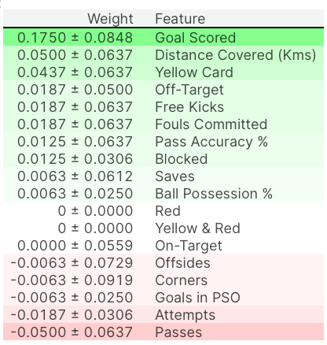

머신 러닝에서 가장 흔한 질문 중 하나는 “어떤 특징이 예측에 가장 큰 영향을 미치는가?” 입니다.
이러한 컨셉은 feature importance라고 불립니다.
특징 중요도를 측정하는 방법은 여러 가지가 있습니다만, 이번 자료에서는 permutation importance에 대해 알아보겠습니다.
작동 원리
다음과 같은 데이터를 생각해 봅시다.

우리는 10세 때 사용 가능한 데이터를 사용하여 사람이 20세가 되었을 때의 키를 예측하려고 합니다.
우리의 데이터에는 유용한 특징(10세 때의 키), 예측력이 거의 없는 특징(소유한 양말의 수), 그리고 이 설명에서는 집중하지 않을 다른 일부 특징들이 포함되어 있습니다.
순열 중요도는 모델이 적합된 후에 계산됩니다. 그래서 우리는 모델을 변경하거나 키, 양말 수 등의 주어진 값에 대한 예측을 변경하지 않을 것입니다.
대신에, 우리는 다음과 같은 질문을 던질 것입니다: 만약 나의 검증 데이터에서 하나의 열을 무작위로 섞는다면, 섞인 데이터에서 예측의 정확도에 미치는 영향은 어떠할까요?

단일 열을 무작위로 재정렬하면 결과 데이터가 실제 세계에서 관찰된 것과 더 이상 일치하지 않으므로 더 정확하지 않은 예측을 초래해야 합니다. 모델이 예측에 크게 의존하는 열을 섞으면 모델의 정확도는 특히 떨어집니다. 이 경우, 10세 때의 키를 섞으면 예측이 끔찍하게 나옵니다. 대신에 소유한 양말의 수를 섞으면, 결과 예측은 거의 피해를 받지 않을 것입니다.
실제 과정은 다음과 같이 진행됩니다:
- 훈련된 모델을 얻습니다.
- 단일 열의 값을 섞고, 그 결과 데이터셋을 사용하여 예측을 합니다. 이러한 예측과 실제 목표 값을 사용하여 성능 저하의 정도를 구합니다.
- 이제 원본 데이터셋의 다음 열에서 단계 2를 반복하고, 모든 열의 중요도를 계산할 때까지 반복합니다.
Code Example
이제 축구 데이터를 활용하여 경기의 최우수 선수 “Man of the Match”를 예측하는 모델을 만들고,
이 모델의 permutation importance를 구해보도록 하겠습니다.
import numpy as np
import pandas as pd
from sklearn.model_selection import train_test_split
from sklearn.ensemble import RandomForestClassifier
data = pd.read_csv('../input/fifa-2018-match-statistics/FIFA 2018 Statistics.csv')
y = (data['Man of the Match'] == "Yes") # Convert from string "Yes"/"No" to binary
feature_names = [i for i in data.columns if data[i].dtype in [np.int64]]
X = data[feature_names]
train_X, val_X, train_y, val_y = train_test_split(X, y, random_state=1)
my_model = RandomForestClassifier(n_estimators=100,
random_state=0).fit(train_X, train_y)eli5를 활용하여 구해보겠습니다.
import eli5
from eli5.sklearn import PermutationImportance
perm = PermutationImportance(my_model, random_state=1).fit(val_X, val_y)
eli5.show_weights(perm, feature_names = val_X.columns.tolist())
결과 해석
맨 위에 있는 값들은 가장 중요한 특징이고, 맨 아래에 있는 것들은 가장 중요도가 낮습니다.
각 행의 첫 번째 숫자는 무작위로 섞음으로 인해 모델 성능이 얼마나 감소했는지를 보여줍니다.
열을 섞을 때 마다 무작위로 생기는 성능 변화가 있기에, ± 뒤의 숫자는 한 번의 재섞기에서 다음 재섞기까지의 성능이 얼마나 달랐는지를 측정합니다.
음의 값은, 무작위로 섞인 데이터가 원본 데이터보다 더 예측을 잘했다는 것을 나타냅니다.
이는 이 예제와 같은 작은 데이터셋에서 더 흔하게 발생하는데 확률에 더 많은 여지가 있기 때문입니다.